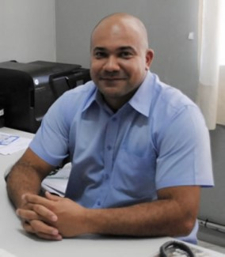
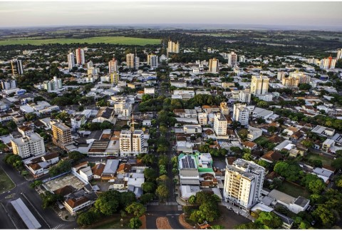
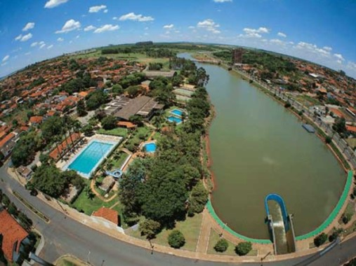
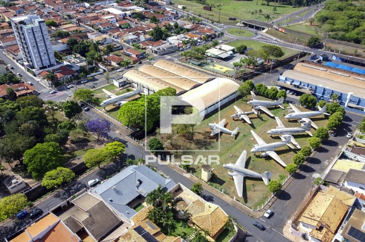
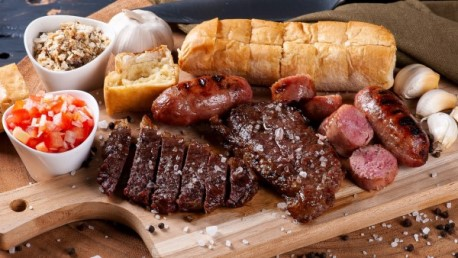

Meu nome é Wagner Cesar Vieira
 Nasci em Cianorte - PR, em fevereiro de 1975. Cresci na cidade de Barretos até 1991.
Cursei o Ensino Médio em Monte Alto e a graduação na cidade vizinha de Taquaritinga.
Em 2007, vim para Bebedouro para trabalhar na Etec Professor Idio Zucchi.
Assistir filmes e séries de terror
Atrações turísticas
Lago artificial
O lago artificial João Valente Filho é o ponto de encontro dos bebedourenses e visitantes. Recebeu esse nome em homenagem ao Arquiteto e Urbanista que viveu toda a sua infância e juventude em Bebedouro e faleceu no dia 20 de agosto de 2011. Entre seus principais projetos, em Bebedouro, estão o terminal rodoviário, o centro comercial da Avenida Pedro Paschoal (Mercado Novo), o Parque Centenário, compreendido entre o sambódromo e a praça Santa Paula Frassinetti, na Avenida Sérgio Sessa Stamato, além do projeto de revitalização do lago artificial, com a instalação dos mirantes.
Museu da aviação
Um dos museus mais antigos dedicados à aviação e, com um acervo muito importante está instalado desde 1968 na cidade de Bebedouro/SP. Esse museu, o Museu de Armas, Máquinas e Veículos Antigos Eduardo André Matarazzo, não somente possui uma coleção de aeronaves antigas e representativas da aeronáutica brasileira como também inúmeros carros e veículos antigos.
Passatempos e curiosidades
Esportes e Cia
O esporte é essencial para a nossa vida. Apesar de gostar dos esportes individuais e coletivos, ainda falta um pouco de coragem para praticar. Maiores informações: Clique aqui
Um bom churrasco
Ter uma vida saudável e uma alimentação equilibrada, sem exageros, é o segredo do bom envelhecimento. Claro que aqui, tem um exemplo fora do padrão. Veja mais
Música de qualidade é sempre bom.

A música acalma a alma e relaxa o corpo e a mente